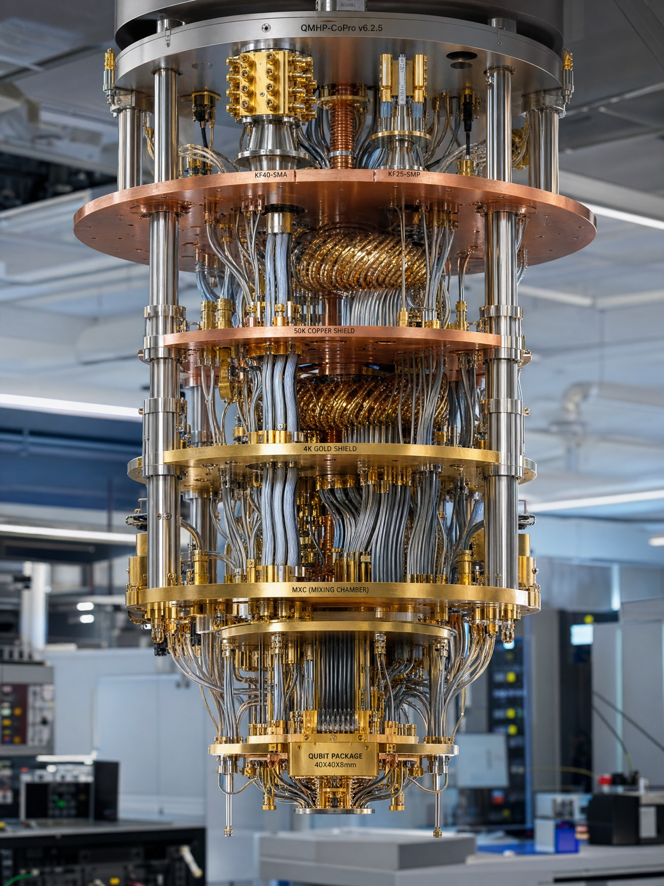
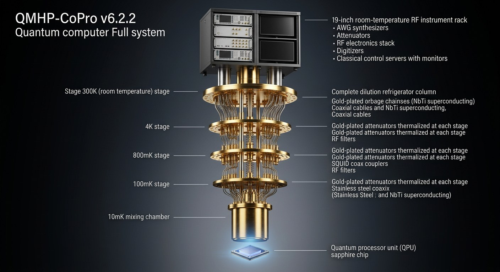
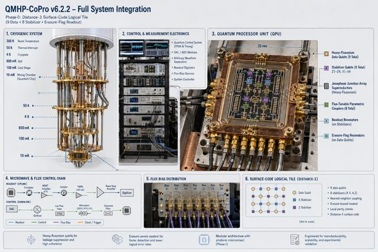
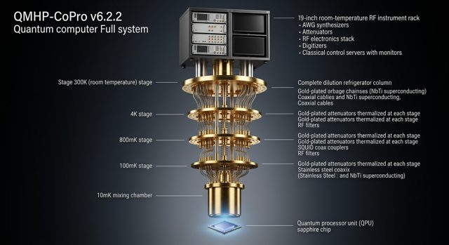
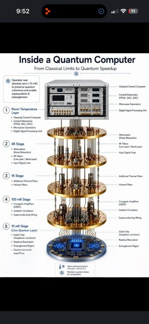

0.00×10⁻³
Error budget
Unlocalized error per syndrome-extraction round against a ~1×10⁻² accounting ceiling — a 1.36× margin on the nominal allocation.
QMHP·CoPro is an erasure-biased heavy-fluxonium architecture that encodes logic in |0⟩–|2⟩ and converts dominant errors into a heralded |1⟩ erasure manifold — turning leakage into information.
This is a TRL-2 architecture roadmap with explicit acceptance criteria, quantified risks, and pivot triggers. It is not experimental proof — every projection remains conditional on the validation-gate chain.
Proposed and internally derived. Conditional until gates P3, P5 and P4 pass experimental validation.
Unlocalized error per syndrome-extraction round against a ~1×10⁻² accounting ceiling — a 1.36× margin on the nominal allocation.
Inner-window leakage estimate δFCZ. Device-level CZ infidelity projected at 7.6–8.6×10⁻³ before P4 validation.
A distance-3 logical tile: 9 data qubits, 8 stabilizers (X1–X4, Z1–Z4), with dedicated erasure-flag readout.
Five-stage pulse-tube dilution platform: 300 K → 50 K → 4 K → 700 mK → 100 mK → mixing chamber.
Encode in the outer levels. Herald the middle. Convert error into information.
Logic is stored in the heavy-fluxonium |0⟩ and |2⟩ levels, sidestepping the relaxation-prone first excited state and exploiting the protected half-flux level structure.
The dominant decay and leakage pathways are routed into |1⟩, then read out by dedicated erasure-flag resonators. A detected erasure is a known error location — far cheaper to correct than a silent one.
A proposed controlled-Z built on a dark-state interaction with an inner-window leakage estimate of 6.3×10⁻⁴. The architecture is judged on a falsifiable derivation, not an idealized ceiling.
Phase-1 extends the lattice through a dual-rail cat-state photonic interconnect — a separate ledger validated as infrastructure, never folded into inherited success claims.

A 19-inch RF rack — AWG synthesizers, attenuators, flux-bias sources and classical control servers — drives the chain from outside the fridge.
Pulse-tube first stage and gold-plated copper shield anchor the bulk thermal load and host the first line attenuation.
The output line meets its HEMT low-noise amplifiers; input lines carry further calibrated attenuation and IR filtering.
The dilution unit's still stage continues thermalization of every coax line and microwave component along the chain.
Final-stage attenuators, isolators and superconducting wiring stage the signal for the quantum chip below.
The QPU sits on the coldest plate of the machine — a gold-plated copper mount holding the 20 mm sapphire processor in its light-tight enclosure.
A 20 mm tile of engineered silence — every element placed for manufacturability, scalability and falsifiable test.

Josephson-junction-array superinductors set the heavy-fluxonium regime for leakage suppression and coherence.
Four X-type and four Z-type (X1–X4, Z1–Z4) read the surface-code parity checks of the distance-3 tile.
Parametric couplers gate the nearest-neighbour interactions that drive the dark-state CZ.
Dedicated readout on the data qubits heralds |1⟩ erasure events for faster detection and lower logical error.
Every claim is tied to a named gate, an acceptance threshold and a failure path. If a gate fails, the result still narrows the half-flux route.
Four design commitments that separate a roadmap worth testing from a number worth doubting.
Heavy-fluxonium qubits route leakage into a heralded erasure channel. Detected errors are cheaper to correct than hidden ones — the whole code budget changes.
Josephson-junction-array superinductors and the half-flux operating point are chosen for leakage suppression and high coherence, not retrofitted around it.
A dual-rail cat-state interconnect lets tiles scale through a photonic fabric — modularity designed in at Phase-1, on its own validation ledger.
Every plate, package and line is drawn for manufacturability, scalability and experimental test — a roadmap that survives contact with a fab.



QMHP·CoPro should be read as a falsifiable roadmap. It is strongest when every claim is tied to a validation gate, an acceptance threshold and a pivot trigger.
The value of this document is not that every number is demonstrated — it is that every major claim already has a named validation gate, threshold, artefact trail and failure path. The half-flux operating point carries a 36–40% thermal-|1⟩ population that must be actively reset to ≤1% before each syndrome round and held there for the duration of the round.
If the half-flux operating point does not close, an integer-flux fallback is defined as a separate ledger rather than an inherited success claim. This is suitable for controlled technical review as a roadmap — fabrication review still requires normal engineering sign-off, tolerance review, vendor validation and lab-specific verification.
For technical review, partnership, investment or research collaboration on the QMHP·CoPro program.
Vendor validation & fabrication review
Program roadmap & milestone briefings
Gate-chain collaboration & co-publication